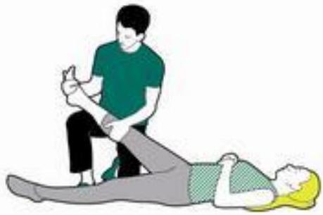
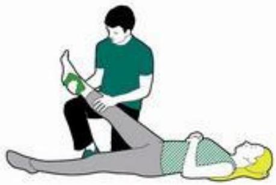
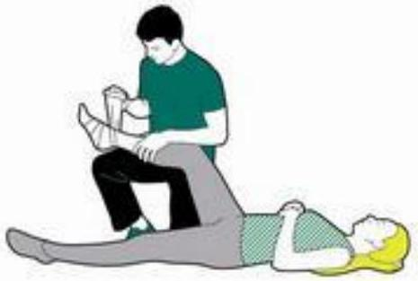
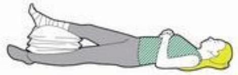

First Aid: Musculoskeletal Injuries and Revision
Bones and Muscle Injuries
Find out how to help someone who you think may have a broken bone (also called a fracture). Watch our first aid advice video on 'How to treat broken bones' for expert advice from one of our St John Ambulance first aid trainers.
Get first aid advice to deal with an open fracture (where a bone has broken through the skin). These pages also provide first aid advice on what to look for and what to do if you suspect someone has: a dislocated joint, a spinal injury or a sprain or strain.
Topics
- Broken bones and fractures
- Dislocated joints
- Spinal injuries
- Strains and sprains
Broken Bones and Fractures
What to look for - Broken bones and fractures
The seven things to look for are:
- Swelling
- Difficulty moving
- Movement in an unnatural direction
- A limb that looks shorter, twisted or bent
- A grating noise or feeling
- Loss of strength
- Shock
What you need to do - Broken bones and fractures
- If it is an open fracture, cover the wound with a sterile dressing and secure it with a bandage. Apply pressure around the wound to control any bleeding.
- Support the injured body part to stop it from moving. This should ease any pain and prevent any further damage.
- Once you've done this, call 999 or 112 for medical help. While waiting for help to arrive, don't move them unless they're in immediate danger.
Waiting for medical help to arrive
Protect the injured area by using bandages to secure it to an uninjured part of the body to stop it from moving. For example, fractures on the arm can be secured with a sling, and a leg with a fracture can be tied to the uninjured leg.
Keep checking the casualty for signs of shock. This does not mean emotional shock, but is a lifethreatening condition, often caused by losing blood.
If they lose responsiveness at any point, open their airway, check their breathing and prepare to treat someone who's become unresponsive.
Dislocated Joints
A joint is where two bones join or connect. A dislocated joint happens when bones are partly or completely pulled out of their normal position. Joints can dislocate when a strong force wrenches the bone into an unnatural position, or because the muscle violently contracts.
The most common joints that dislocate are the shoulder, knee, jaw, or joints in the thumbs or fingers.
Dislocating a joint can be really painful and cause other damage, like a break in the end of the surrounding bone or tearing of the ligaments around the joint. Sometimes it's difficult to tell whether the injury is a dislocation or a fractured bone. If you're not sure, then always treat it as broken bone.
Don't try to put the dislocated bone back into its socket as you could make it worse.
What to look for - Dislocated joints
The four signs of a dislocated joint are:
- Strong, sickening pain
- Not being able to move the joint
- Swelling and bruising around the joint
- Shortening, bending or deformity of the joint
What you need to do - Dislocated joints
- Advise them to stay still and help them to support their dislocated joint in the most comfortable position.
- Stop the joint from moving using a bandage. For an arm injury, make a sling to support the arm. For a leg injury, use padding or broad-fold bandages.
- To give extra support for an injured arm, tie it in place by bandaging around the sling and the chest.
- Once you've stopped the joint from moving, take or send the injured person to hospital.
- Keep checking their breathing, pulse and level of response. Check the circulation beyond the bandages every ten minutes and loosen if necessary.
Spinal Injury
The spinal cord connects the brain to the rest of the body. Together they make up the central nervous system.
The spine is made up of:
- the spinal cord itself
- the bones that protect the spinal cord (called vertebrae)
- the discs of tissue between the vertebrae
- the surrounding muscles
- and the nerves which branch off it, to carry messages between the brain and the rest of the body in the form of high-speed electric pulses.
The spinal cord connects to individual muscles and tells them to move (called motor function). It also connects to organs like the skin, which communicates feelings like touch, pain and heat (called sensory functions).
The greatest risk if someone has a spinal injury is that their spinal cord will be either temporarily or permanently damaged. If this happens, they'll become paralysed from the point of injury down.
The most common cause of a spinal injury is extreme force, violent twisting or bending forwards or backwards. You should be aware of the possibility of a spinal injury if someone has:
- fallen from a height, e.g. a ladder
- fallen awkwardly, e.g. while doing gymnastics
- dived into a shallow pool and hit the bottom
- fallen from a moving vehicle, e.g. a motorbike, or a horse
- been in a collapsed rugby scrum
- been in a motor vehicle which suddenly crashes
- been hit by a heavy object falling across their back
- had an injury to the head or face.
What to look for - Spinal injury
If you think someone may have injured their spine, these are the seven key things to look for:
If the vertebrae (bones protecting the spinal cord) are damaged:
- pain in the neck or back
- unusual shape or twist in the normal curve of the spine
- soreness and/or bruising in the skin over the spine
If the spinal cord is damaged:
- loss of control over limbs - may not be able to move arms or legs
- loss of sensation, or abnormal sensations, e.g. burning or tingling
- loss of bladder and/or bowel control
- breathing difficulties
What you need to do - Spinal injury
If they're responsive:
- Reassure them and tell them not to move
- Call 999/112 for an ambulance or ask someone else to call one for you
- You need to stop their head or neck from moving to prevent further damage
- To do this, kneel or lie behind their head. Rest your elbows on the ground or on your knees to keep your arms steady. Grip each side of their head, without covering the ears, to support their head in this position so that the head, neck and spine are in a straight line
- You need to support the head until emergency services can take over, no matter how long it takes for them to come. If there is someone who can help you, ask them to put rolled-up blankets, towels or clothes on either side of the head to help support it.
If they're unresponsive:
- Open their airway using the jaw-thrust technique. To do this, put your fingertips at the angles of the jaw and gently lift to open the airway, avoiding tilting the neck
- Then check if they're breathing
- If they're breathing, continue to support their head and call 999/112 for an ambulance. If you can't maintain an open airway then carefully follow the instructions of how to put someone with a spinal injury in the recovery position.
If they're not breathing, you'll need to start CPR (cardiopulmonary resuscitation) While waiting for help to arrive, keep checking their breathing, pulse and level of response.
Strains and Sprains
Strains and sprains are common injuries which affect the soft tissues around joints - the muscles, tendons and ligaments.
They happen when the tissues are stretched, twisted or torn by violent or sudden movements, for instance if someone changes direction suddenly, or falls and lands awkwardly.
A sprain is when a ligament has been twisted or torn. A strain is when the muscle has been overstretched and has partially torn. (A rupture is when a muscle or tendon is completely torn).
What to look for - strains and sprains
If you think someone may have strained or sprained a muscle, ligament or tendon, these are the three key things to look for:
- Pain and tenderness
- Difficulty moving
- Swelling and bruising
What you need to do - strains and sprains
Remember RICE for the four steps to deal with strains and sprains:
- Rest
- Ice
- Comfortable support
- Elevation
Treatment for a strain or sprain
Step 1 of 4: Rest
- Help them to sit or lie down and support in a comfortable raised position the part they've hurt.
Step 2 of 4: Ice
- To cool the area, apply a cold compress, like an ice pack or cold pad. This will help to reduce the swelling, bruising and pain. Do not leave on for more than ten minutes.
Step 3 of 4: Comfortable support
- Leave the cold compress in place or wrap a soft layer of padding, e.g. cotton wool, around the area. Tie a support bandage around it, to hold it in place, which goes up as far as the next joint on each side. For example, for an ankle injury, the bandages should go from the base of the toes to the knees.
Step 4 of 4: Elevate
- Elevate the injury and support it with something soft, like cushions. If the pain is severe, or they can't use their limb at all, take or send them to hospital. Otherwise, just tell them to rest it and to see a health care professional, if necessary.
Revision Questions
Introduction, concept and principles of first aid
- What is first aid?
- What are the role and qualities of first aider?
- What are features and contents of the first aid kit?
- What do AMEGA principles stand for?
- What do DRABC stand for?
Management of Medical Emergencies
- How do you give first aid to someone with the following conditions:
- Diabetes,
- allergy,
- fever,
- meningitis,
- headache,
- ear ache and
- tooth ache,
- abdomen pain,
- vomiting and diarrhoea,
- poisons,
- bites and stings,
- foreign bodies,
Emergency Childbirth
- What are the Stages of labor?
- Signs and symptoms of labor?
Management of Body Injuries
- How do you provide first aid to someone with the following conditions?
- Fractures
- dislocations
- wounds
- sprains
- strains
- head injuries
- crush injuries
- burns and scalds
Skills Demonstration and Practice
- Describe the following terms
- cardio pulmonary resuscitation (CPR)
- Artificial Ventilations,
- Recovery position,
- List type of bandages and their function
- How do you carry a casualty to an ambulance?